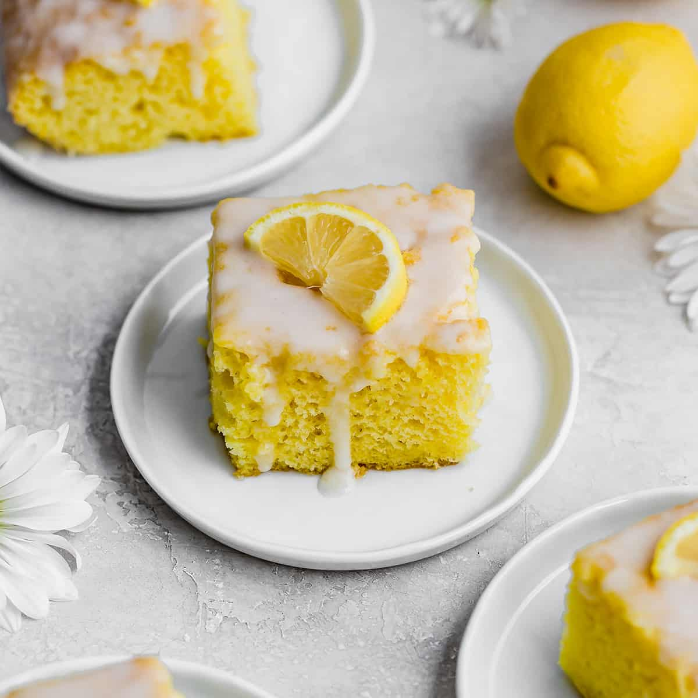

Home
Jell-o-Cake

Description
It is a boxed cake mix, usually white or yellow, with a box of lemon gelatin added to the batter.Usually, it is topped with a lemon glaze.
Ingredients
- 1 (3-ounce) package lemon-flavored gelatin, such as Jell-O
- 1 1/3 cups boiling water
- 1 (2-layer package) lemon cake mix
- 3 large eggs
- 2/3 cups vegetable oil
- 1 1/2 cups powdered sugar
- 1/4 cup lemon juice
Steps
- Gather all ingredients. Preheat the oven to 350 degrees F (175 degrees C). Grease and flour a 9x13-inch baking pan.
- Stir lemon gelatin into the boiling water in a large bowl; let cool to room temperature, 30 minutes.
- Once gelatin has cooled, beat in cake mix, eggs, and vegetable oil with an electric mixer on medium speed for 2 minutes.
- Spread batter evenly in the prepared baking pan.
- Bake until a toothpick inserted into the center of the cake comes out clean, 30 to 35 minutes.
- Meanwhile, whisk together powdered sugar and lemon juice in a small bowl.
- Remove cake from oven and place on a wire rack. Using a chopstick or straw, poke holes about 1-inch apart all over the cake. Drizzle glaze over the cake and spread evenly. Let cake cool completely on wire rack, about 1 hour.